ROIKOI
Helping companies hire for both technical excellence and cultural alignment through a streamlined passive referral network.
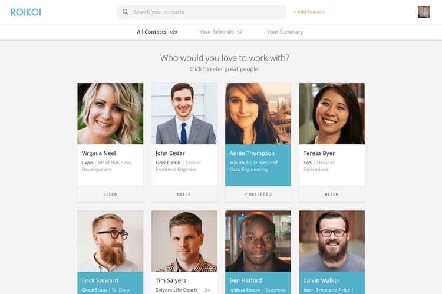
Overview
The Problem
Hiring is hard and expensive. There are tools that show who people know and who they've worked with (LinkedIn, of course), but no tools that show who they actually think are great. Studies show that hires driven by referrals stay at companies at least 70% longer than non-referral hires.
The Goal
Most companies have a referral program, but most employees don't have the recruiting knowledge to understand which of their connections might be fit for open roles, other than job titles. Our goal was to figure out a scalable, accurate, and intuitive way to map each person's top connections to a company's needs.
We worked directly with recruiting companies, as well as HR staff (recruiters) at various tech companies in Austin and relentlessly prototyped and tested with these individuals throughout the entire development cycle.
Research & Interviews
We interviewed recruiting agencies and in-house talent teams across Austin's tech scene to uncover the friction in their hiring workflows. We found a consistent, manual pattern: recruiters spend hours combing LinkedIn and logging data into 'digital rolodexes' in hopes that a candidate rejected by Company X might be a perfect fit for Company Y later.
Plan
We began initially by not wanting to create just another massive searchable rolodex of prospects.
ROIKOI actually started with the idea of generating leaderboards through a simple game of your network connections. The more people you actually wanted to work with, the higher on the leaderboard they'd climb.
This got a lot of great feedback from individuals because it allowed potential users to really search out not only great performers, but those that would make good cultural fits.
Exploration and Process
Early ideas for ROIKOI centered around leaderboards that were generated from a simple game built of your network connections.
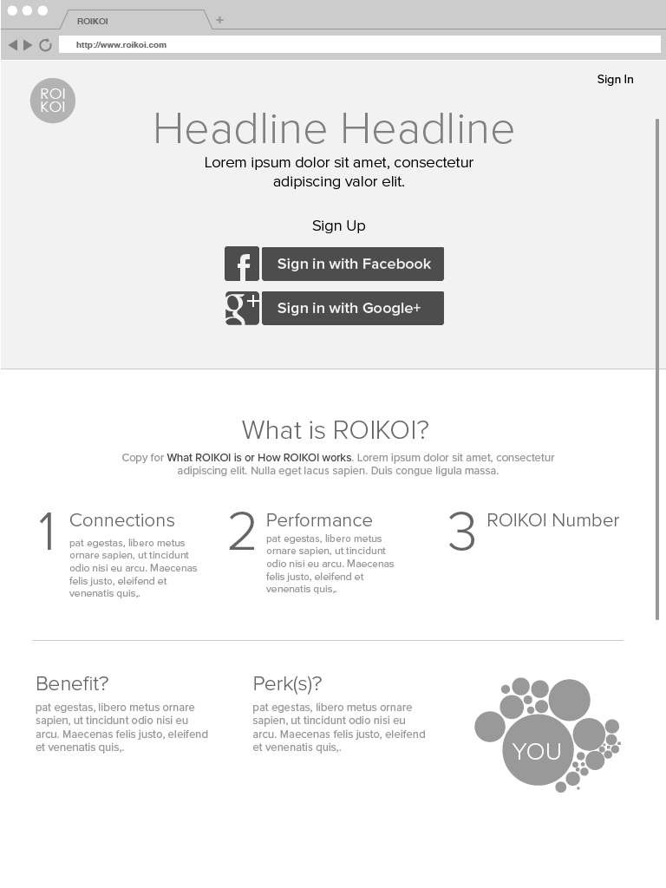
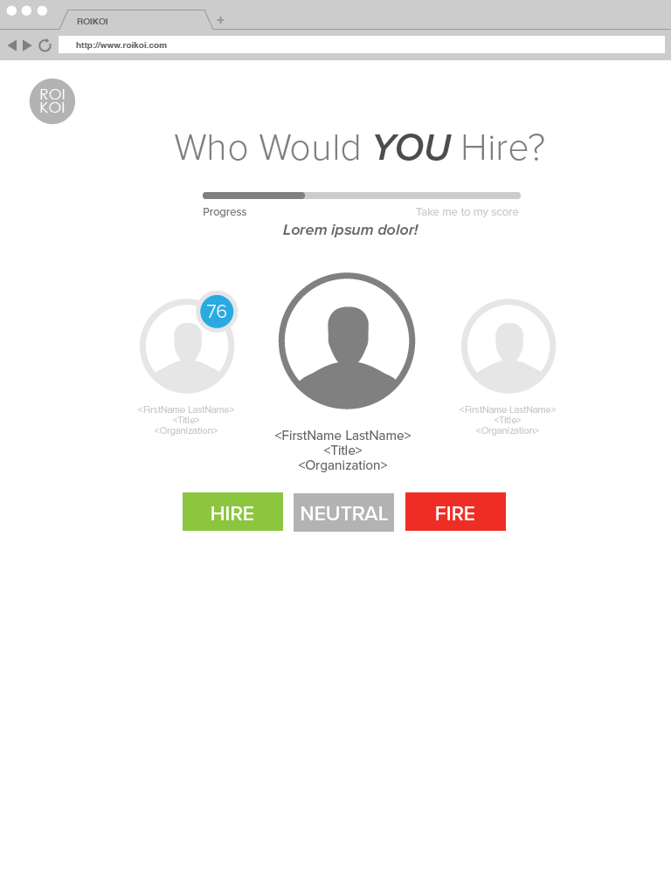
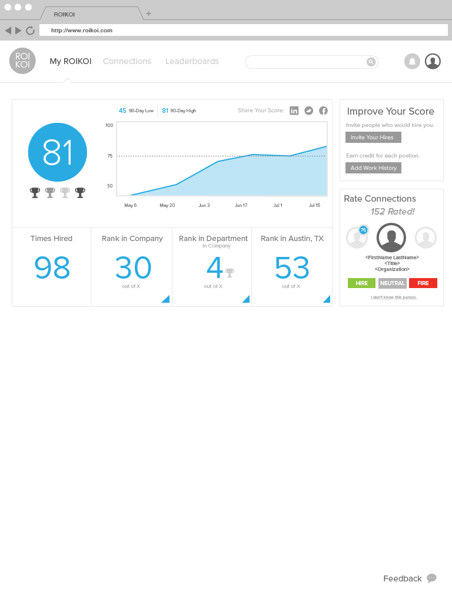
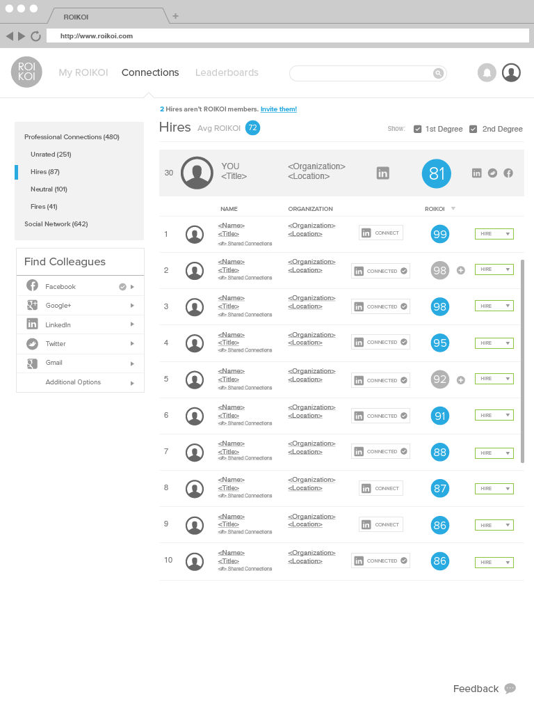
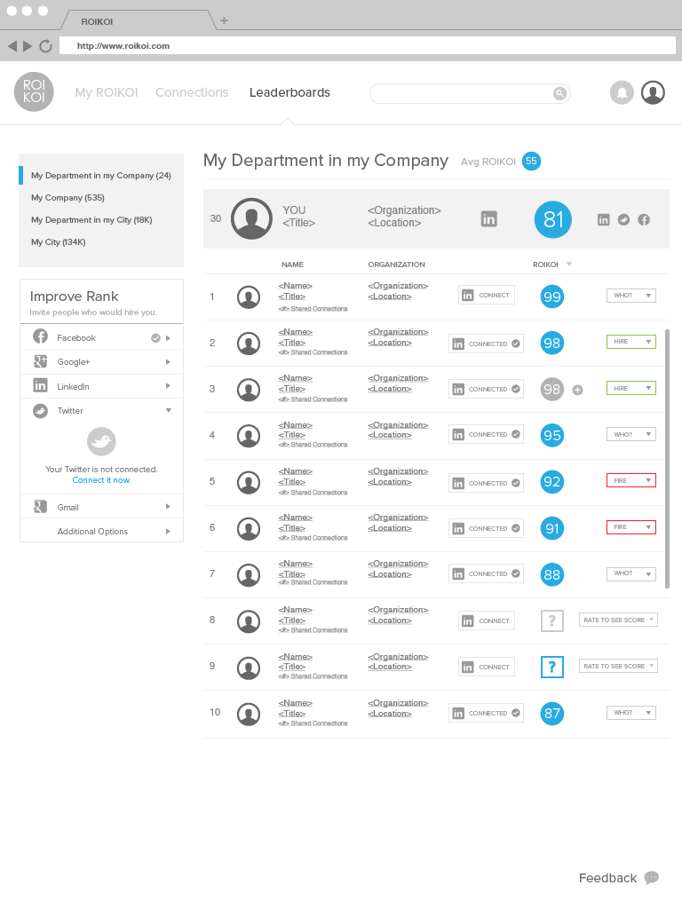
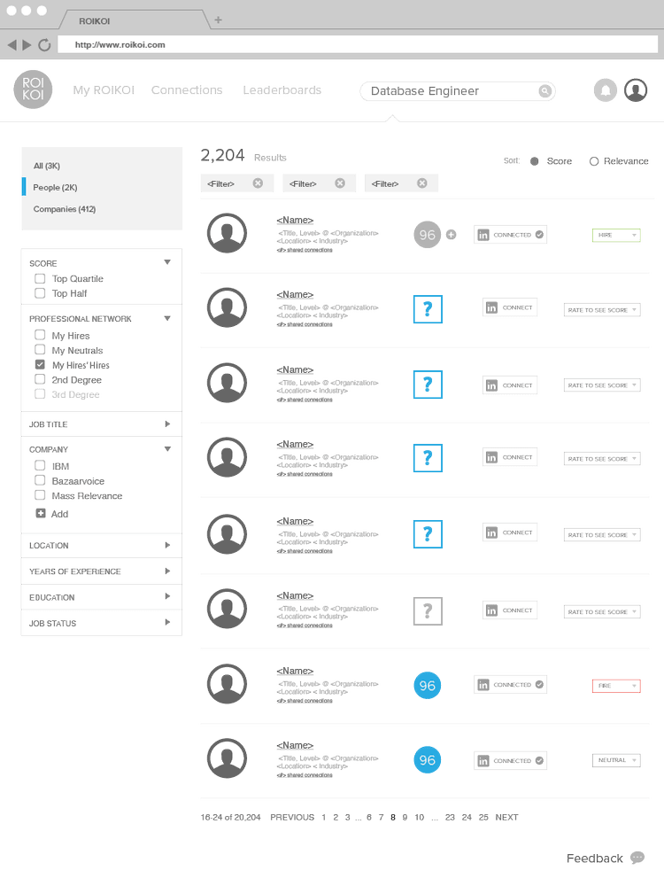
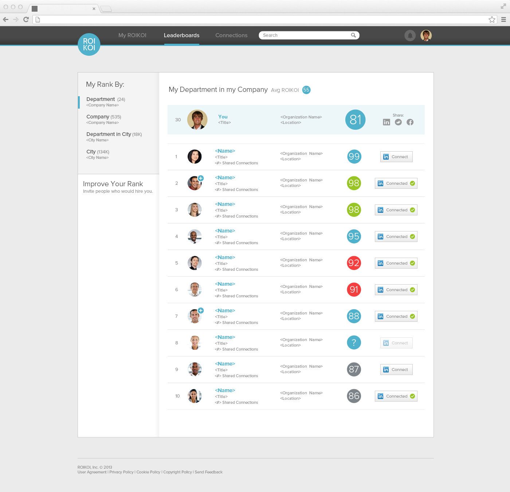
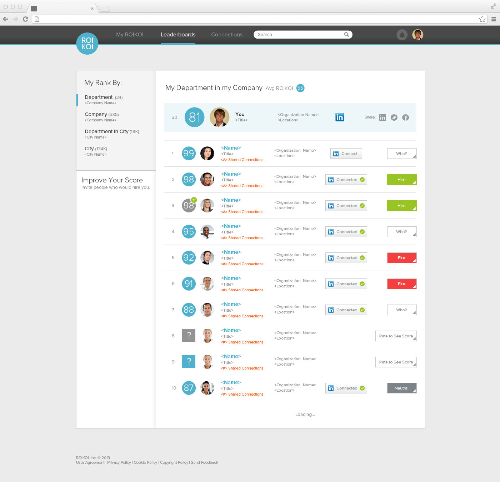
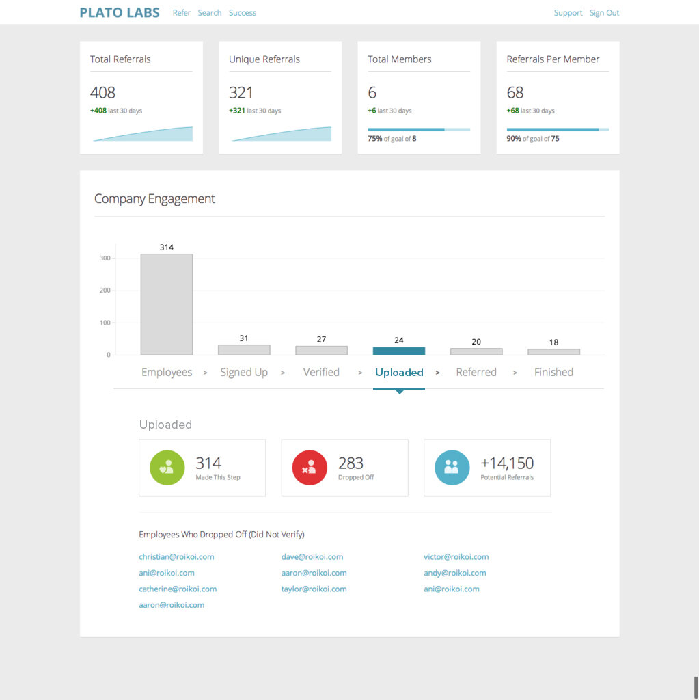
In the months after launch, the product was continually iterated on, and eventually morphed from being professional leaderboards, to a more robust recruiting platform driven by machine-learning (AI).
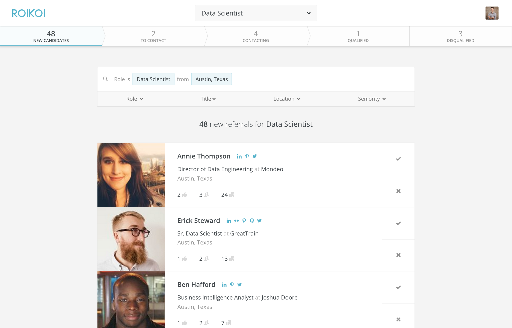
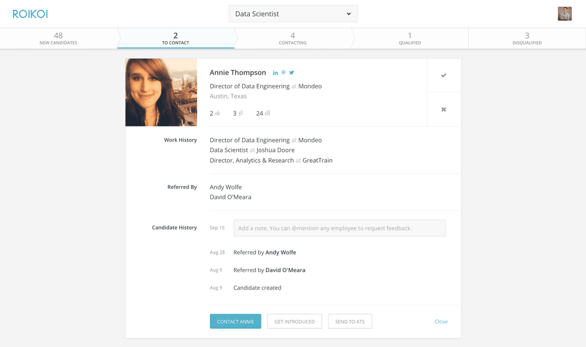
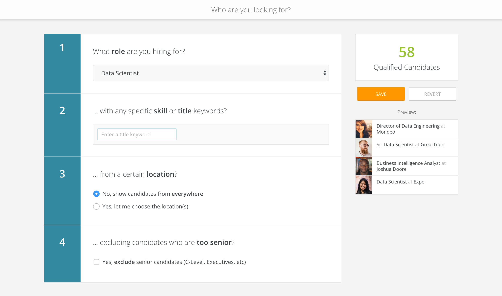
Outcome
The result was software that could pull in open jobs, map top network connections, and use AI to match candidates to open reqs. The system can take into account the right times to reach out and what content to use to maximize reply rates.
*ROIKOI was acquired by Terminal on April 23, 2020.